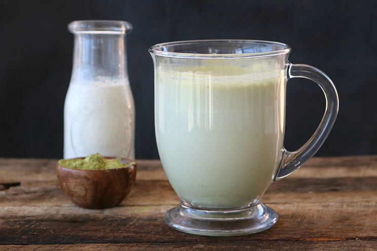

Morgina Latte

Soothing Moringa Latte
Incredibly easy and nourishing Moringa Latte with a touch of sweetness and warmth.
Ingredients
- 1 tbsp moringa powder. Can purchase here: Mountain Rose Herbs
- 1.5 cups almond milk or milk of choice
- 1 tsp honey or sweetner of choice
- 2 cardamom pods
Possible Add Ins
- 1 tsp ashwaghanda powder
- 1 tsp mushroom powder
- cinnamon to your liking